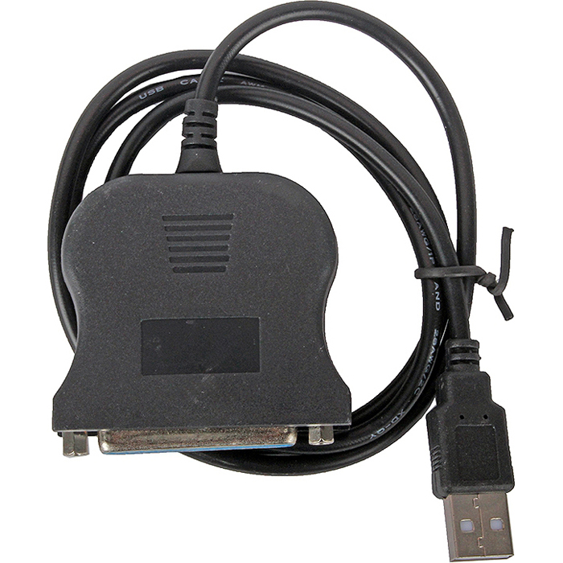

В прошлой заметке Светодиодный индикатор для подключения к параллельному порту я описал процесс проектирования и изготовления устройства для управления 12 светодиодами, подключенными к параллельному порту. В этой заметке я опишу процесс разработки программного обеспечения для управления этим устройством.
Итак, как я уже писал, первым работающим способом управления светодиодами на параллельном порту оказалась работа с портами ввода-вывода через специальный файл /dev/ports. Я доработал тестовую программу, превратив её в утилиту командной строки, которая позволяет узнавать текущее состояние светодиодов на указанном параллельном порту и выставлять новое состояние светодиодов.
При запуске без аргументов, программа выводит справку:
Usage: parled12a [--port <port>] --set <value>
parled12a [--port <port>] --get
parled12a [--port <port>] --help
Options:
--port <port> - IO port numberic address or one of special values:
LPT1 - 0x3BC (default),
LPT2 - 0x378,
LPT3 - 0x278.
Modes:
--set <value> - set activity of 12 leds. Value - is number, where each of
12 bits represent activity of corresponding led.
Special values:
all - turn on all leds,
none - turn off all leds.
--get - get activity of 12 leds. Value - is number, where each of 12 bits
represent activity of corresponding led.
--help - show this help
Программе можно указать как числовое значение адреса порта, так и одну из трёх символьных констант - LPT1, LPT2, LPT3. По умолчанию используется значение LPT1, но мне каждый раз приходилось указывать константу LPT2, т.к. единственный параллельный порт, имеющийся на моём компьютере, оказался расположен по адресам 0x378-0x37A. DOS ищет параллельные порты на портах ввода-вывода в указанном порядке, но при нумерации параллельных портов не использует жёсткого соответствия, а нумерует по порядку только найденные порты. Таким образом, этот единственный параллельный порт, имеющийся в моём компьютере, в DOS получил бы обозначение LPT1.
При установке состояния светодиодов можно указать число в десятичном (без ведущих нолей), восьмеричном (указав ведущий ноль) или шестнадцатеричном виде (с префиксом 0x). Каждый из 12 бит этого числа соответствует одному из светодиодов, единица означает включенный светодиод, а ноль - выключенный. Также вместо числового значения можно указать одну из предопределённых констант: all - включить все светодиоды, none - выключить все светодиоды.
Исходный текст программы можно увидеть по ссылке parled12a.c.
Программа прекрасно справляется со своей задачей, однако прямая работа с портами ввода-вывода не учитывает специфику реализации конкретного параллельного порта. При попытке воспользоваться каким-нибудь адаптером USB-LPT, даже если он поддерживается Linux'ом, программа скорее всего не будет работать.
Чтобы иметь возможность управлять состоянием светодиодов на параллельном порту, имеющем реализацию, отличающуюся от стандартной, нужно работать через подсистему параллельного порта Linux. Прежде чем попытаться написать такую программу, я перевёл документацию на эту подсистему на русский язык:
Подсистема параллельного порта Linux 2.4
Пользуясь переведённой документацией, я написал программу, аналогичную предыдущей. При запуске без аргументов она выводит вот такую справку:
Usage: parled12b [--devpath <devpath>] --set <value>
parled12b [--devpath <devpath>] --get
parled12b --help
Options:
--devpath <devpath> - path to parport device, default - /dev/parport0
Modes:
--set <value> - set activity of 12 leds. Value - is number, where each of
12 bits represent activity of corresponding led.
Special values:
all - turn on all leds,
none - turn off all leds.
--get - get activity of 12 leds. Value - is number, where each of 12 bits
represent activity of corresponding led.
--help - show this help
Known bugs:
Option --get cannot return correct value of high 4 bits, because linux
driver of parallel port resets the control bits when port opened.
Вместо адреса порта ввода-вывода этой программе нужно указать путь к специальному файлу параллельного порта. Впрочем, единственный имеющийся на моём компьютере параллельный порт доступен через специальный файл /dev/parport0, поэтому на этот раз указывать его явным образом мне не пришлось.
Исходный текст программы можно увидеть по ссылке parled12b.c.
Эта программа лишена недостатков предыдущей и сможет работать с любой реализацией параллельного порта, которая поддерживается Linux. Для примера я попробовал воспользоваться адаптером USB2LPT Orient ULB-225, который приобрёл в интернет-магазине e2e4 за 290 рублей:
До конца не был уверен, что программа заработает с этим адаптером, поэтому не особо разочаровался, когда понял, что адаптер не реализует полноценный параллельный порт. В системе он определяется не как ещё одно устройство /dev/parport*, а как устройство /dev/usb/lp0. Разница заключается в том, что в первом случае имеется полный доступ к каждому отдельному выводу и различным режимам работы параллельного порта, а во втором случае реализуется лишь символьное устройство, в которое можно отправлять символы на принтер и считывать состояние принтера при помощи системных вызовов ioctl. При помощи этого устройства невозможно зафиксировать в одном состоянии даже выводы, используемые для передачи данных. Устройство дожидается сигнала готовности принтера, выставляет на линиях данных логические уровни, соответствующие передаваемому байту, активирует сигнал передачи данных, а когда принтер деактивирует сигнал готовности, состояние линий данных сбрасывается. Когда принтер обработает полученный байт, он снова активирует сигнал готовности и цикл передачи данных повторяется. Однако управлять выводами параллельного порта на этом адаптере произвольным образом уже невозможно.
Вернёмся к программе. У неё тоже имеется недостаток - состояние светодиодов, подключенных к управляющим выводам, сбрасывается при каждом повторном запуске программы. Дело в том, что при открытии специального файла параллельного порта драйвер инициализирует состояние управляющих выводов, возвращая их в начальное положение.
Чтобы состояние светодиодов, подключенных к управляющим выводам, не сбрасывалось, я решил написать программу-демон, которая будет постоянно держать открытым специальный файл параллельного порта и переключать состояние светодиодов по команде от программы-клиента.
Итак, работающая программа для управления светодиодами на параллельном порту уже имеется, теперь осталось реализовать на её базе демон.
Входящие подключения от клиентов я изначально решил принимать на Unix-сокет, т.к. доступ к Unix-сокету можно ограничивать точно так же, как доступ к файлу - используя стандартный для Unix механизм ограничения доступа. Это позволит сразу отказаться от необходимости придумывать механизмы аутентификации при доступе к демону со стороны клиентов, что было бы необходимо сделать, если бы подключения принимались из сети.
Существуют датаграмные Unix-сокеты, но они мне не подошли, потому что в случае команды get демон не сможет отправить клиенту ответ с текущим состоянием светодиодов. Дело в том, что ответ надо отправлять на точно такой же датаграмный Unix-сокет, открытый клиентом, но тогда клиент должен будет во-первых открывать этот Unix-сокет на прослушивание, во-вторых - отправлять вместе с запросом путь к своему сокету, и в-третьих - ждать ответа. Это мне показалось излишне неуклюжим, поэтому я воспользовался обычными Unix-сокетами с установкой соединения.
Первым делом я реализовал приём входящих подключений к Unix-сокету и выполнение поступающих команд get и set.
Первый вариант этой программы одновременно мог обслуживать только одного клиента, причём следующий клиент не начинал обслуживаться, пока не отключится предыдущий. Хотелось сделать программу, которая могла бы обслуживать подключения от нескольких клиентов одновременно. Классический подход с порождением дочернего процесса на каждого подключившегося клиента тут, на мой взгляд, не годился, т.к. был очевидно избыточен для такой простой задачи. Многопоточный вариант не намного менее избыточен, поэтому тоже был отклонён. На самом деле, мне давно было интересно попробовать механизм epoll и испытать свои силы в мультиплексированном обслуживании запросов от нескольких клиентов в рамках одного однопоточного процесса. При таком подходе в основном цикле при помощи epoll проверяется готовность сокетов к чтению или записи, а с каждым клиентом ассоциирована структура данных, содержащая входной и выходной буферы и дополнительные поля, отображающие текущее состояние клиента. По идее, здесь принято использовать конечные автоматы, чтобы отслеживать переходы клиента из одного состояния в другое, но в моём случае таблица переходов оказалась тривиальной, поэтому я не оформлял конечный автомат в явном виде. Реализация всего этого заняла довольно много времени. Сначала это была специализированная программа, но потом я поделил её на ряд универсальных подсистем:
Ни один из сокетов я не переключал в неблокирующий режим, но на практике блокировок не происходило, т.к. я постарался реализовать обработку событий максимально аккуратно, так чтобы операции ввода-вывода с сокетом происходили только тогда, когда сокет готов к соответствующей операции.
Потом я реализовал собственно демонизацию. Т.к. демонизировавшийся процесс найти становится непросто, я последовал сложившейся практике и предусмотрел создание PID-файла.
Для такой простой функции, как управление светодиодами, привилегии root избыточны. Поэтому следующим этапом я реализовал сброс привилегий root, настройку прав доступа к Unix-сокету и переход в chroot-среду.
Однако, после сброса привилегий, демон при завершении работы уже не мог удалить за собой Unix-сокет и PID-файл. Чтобы демон мог удалять их при завершении, я поделил его на два процесса - ведущий и ведомый. Ведущий не сбрасывает привилегий, ждёт завершения ведомого, считывает код его завершения и удаляет Unix-сокет и PID-файл. Ведомый выполняет всю остальную работу.
Когда появился ведущий процесс, который анализирует код завершения ведомого процесса, я подумал, что в эту схему хорошо вписывается функционал аварийного перезапуска ведомого процесса, если тот внезапно завершится. И такой функционал я тоже реализовал. А чтобы завершить работу и ведущего и ведомого демонов корректно, ведущий процесс, при получении сигнала на завершение работы, сам ретранслирует сигнал ведомому процессу, дожидается его завершения, а потом удаляет Unix-сокет и PID-файл.
В процессе разработки функции аварийного перезапуска я столкнулся с тем, что мне было трудно отлаживать эту систему из двух процессов, обменивающихся сигналами. Поэтому я добавил в программу функцию ведения отладочного журнала через syslog.
Конечно, программа получилась неоправданно сложной. Оправдание тут только одно - это учебная программа, реализуя которую я приобрёл навыки, полезные для реализации демонов:
На сей раз для получения справки по использованию демона, нужно при запуске указать ему опцию --help:
Usage: parled12 <options>
parled12 --help
Options:
--parport <parport> - path to parport device, default - /dev/parport0
The option can be specified multiple times.
--socket <socket> - path to listen unix-socket, default -
/run/parled.sock
--socket-owner <user> - owner of socket
--socket-group <group> - group of socket
--socket-mode <mode> - access mode for socket
--daemon - run as daemon
--user <user> - switch to specified user after open all sockets
and devices
--group <group> - switch to specified group after open all sockets
and devices
--chroot <path> - change root path of process to specified path
--pidfile <PID-file> - path to file, where will be saved PID, default -
none
Modes:
<default> - listen commands on socket and work with leds on parallel
port.
--help - show this help
При помощи опции --parport можно указать специальные файлы параллельных портов, светодиодами на которых должен управлять демон. Порты нумеруются, начиная с нуля, клиент в командах демону может указывать номер порта явным образом.
Опции --socket, --socket-owner, --socket-group, --socket-mode позволяют указать путь к Unix-сокету, владельца, группу владельца, режим доступа. Через этот Unix-сокет будут приниматься подключения клиентов.
Опция --daemon позволяет переключить программу из интерактивного режима в режим демона. В интерактивном режиме программа не отделяется от консоли и пишет отладочные сообщения на стандартный вывод. В режиме демона программа отделяется от консоли, от родительского процесса, от группы процессов и делится на два процесса - ведущий и ведомый. Ведущий процесс ловит сигналы: при внезапном завершении ведомого, ведущий процесс перезапускает ведомого, а при получении сигнала завершения работы - завершает ведомого и удаляет PID-файл и Unix-сокет. Ведомый открывает необходимые специальные файлы параллельных портов и Unix-сокет, после чего сбрасывает привилегии и начинает принимать входящие подключения и обслуживать запросы.
Опции --user, --group, --chroot позволяют настроить сброс привилегий ведомым процессом. После открытия необходимых специальных файлов параллельных портов и Unix-сокета, ведомый процесс может перейти в указанную chroot-среду и сменить свой эффективный идентификатор пользователя и группы.
Опция --pidfile позволяет указать путь к файлу, в котором будет храниться идентификатор ведущего процесса.
Архив с исходными текстами программы можно взять по ссылке stupin.su/git/stupin/parled12/archive/master.tar.gz.
Программа работает в одном из двух режимов: вывод справки или основной рабочий режим. Рабочий режим условно можно поделить на два подрежима: интерактивный подрежим и подрежим демона.
В качестве клиента можно использовать программу socat, которая позволяет подключиться к Unix-сокету и соединить их со стандартным вводом и выводом:
$ socat UNIX:/run/parled.sock STDIO
Подключившись к демону таким образом, можно отправлять ему одну из следующих команд:
| Команда | Описание |
|---|---|
| get leds [from port <port>] | Возвращает шестнадцатеричное число, младшие 3 цифры которого соответствую состоянию 12 светодиодов. Единица соответствует светящемуся светодиоду, а ноль - погашенному. |
| set <bits> leds [on port <port>] | Задаёт состояние 12 светодиодов. В качестве аргумента bits выступает десятичное, восьмеричное или шестнадцатеричное число, 12 младших бит которого соответствуют состоянию 12 светодиодов. Вместо числа можно указать константу all или none. Константа all соответствует 12 единичным битам, а константа none - 12 нулевым битам. |
| not leds [on port <port>] | Обращает состояние всех светодиодов на противоположное: светящиеся светодиоды гасятся, а погашенные светодиоды включаются. |
| or <bits> leds [on port <port>] | Выполняет со светодиодами логическую побитовую операцию ИЛИ: в дополнение к уже светящимся светодиодам включатся указанные единичными битами аргумента. |
| and <bits> leds [on port <port>] | Выполняет со светодиодами логическую побитовую операцию И: из уже светящихся светодиодов останутся включенными только указанные единичными битами аргумента. |
| xor <bits> leds [on port <port>] | Выполняет со светодиодами логическую побитовую операцию ИСКЛЮЧАЮЩЕЕ ИЛИ: состояние светодиодов, указанных единичными битами аргумента, будет обращено на обратное. |
| add <bits> leds [on port <port>] | Добавляет к состоянию светодиодов, выраженному в виде числа, число, указанное в аргументе. От результата сложения берутся только 12 младших бит, которые задают новое состояние светодиодов. |
| sub <bits> leds [on port <port>] | Вычитает из состояния светодиодов, выраженного в виде числа, число, указанное в аргументе. От результата вычитания берутся только 12 младших бит, которые задают новое состояние светодиодов. |
| inc leds [on port <port>] | Добавляет к состоянию светодиодов, выраженному в виде числа, единицу. От результата сложения берутся только 12 младших бит, которые задают новое состояние светодиодов. |
| dec leds [on port <port>] | Вычитает из состояния светодиодов, выраженного в виде числа, единицу. От результата вычитания берутся только 12 младших бит, которые задают новое состояние светодиодов. |
| rs <shift> leds [on port <port>] | Сдвиг битов, соответствующих состоянию светодиодов, вправо на указанное количество позиций. Лишние биты отбрасываются, а новые биты слева принимают нулевое значение. Аргумент может принимать любое значение, однако сдвиг на 0 битов и на более 11 битов не имеют особого смысла: в первом случае состояние светодиодов не меняется, а во втором случае все светодиоды будут погашены. |
| ls <shift> leds [on port <port>] | Сдвиг битов, соответствующих состоянию светодиодов, влево на указанное количество позиций. Лишние биты отбрасываются, а новые биты справа принимают нулевое значение. Аргумент может принимать любое значение, однако сдвиг на 0 битов и на более 11 битов не имеют особого смысла: в первом случае состояние светодиодов не меняется, а во втором случае все светодиоды будут погашены. |
| rcs <shift> leds [on port <port>] | Циклический сдвиг битов вправо: вытесненные вправо биты будут добавлены слева. Сдвиг на 0 битов и на количество, кратное 12, не меняет состояния светодиодов. Сдвиг на более чем 12 битов имеет такой же эффект, как сдвиг на остаток от деления на 12. |
| lcs <shift> leds [on port <port>] | Циклический сдвиг битов влево: вытесненные влево биты будут добавлены справа. Сдвиг на 0 битов и на количество, кратное 12, не меняет состояния светодиодов. Сдвиг на более чем 12 битов имеет такой же эффект, как сдвиг на остаток от деления на 12. |
| exit | Завершение работы: по этой команде демон разрывает соединение с клиентом. |
| quit | Завершение работы: по этой команде демон разрывает соединение с клиентом. |
| close | Завершение работы: по этой команде демон разрывает соединение с клиентом. |
| logout | Завершение работы: по этой команде демон разрывает соединение с клиентом. |
Если демону были указаны несколько специальных файлов параллельных портов, то они нумеруются с 0. Если необходимо выполнить команду на нулевом порту или на единственном указанном порту, то окончание команды с указанием номера порта можно не указывать.
Для управления светодиодами из скриптов, можно использовать перенаправление ввода-вывода, следующим образом:
$ echo -n "set 0x801 leds" | socat UNIX:/run/parled12.sock STDIO
Например, можно написать вот такой shell-скрипт, который будет последовательно переключать светодиоды, начиная с крайних до центральных, а потом наоборот:
#!/bin/sh while true do echo "set 0x801 leds" | socat UNIX:/run/parled12.sock STDIO ; sleep 0.1 echo "set 0x402 leds" | socat UNIX:/run/parled12.sock STDIO ; sleep 0.1 echo "set 0x204 leds" | socat UNIX:/run/parled12.sock STDIO ; sleep 0.1 echo "set 0x108 leds" | socat UNIX:/run/parled12.sock STDIO ; sleep 0.1 echo "set 0x090 leds" | socat UNIX:/run/parled12.sock STDIO ; sleep 0.1 echo "set 0x060 leds" | socat UNIX:/run/parled12.sock STDIO ; sleep 0.1 echo "set 0x090 leds" | socat UNIX:/run/parled12.sock STDIO ; sleep 0.1 echo "set 0x108 leds" | socat UNIX:/run/parled12.sock STDIO ; sleep 0.1 echo "set 0x204 leds" | socat UNIX:/run/parled12.sock STDIO ; sleep 0.1 echo "set 0x402 leds" | socat UNIX:/run/parled12.sock STDIO ; sleep 0.1 done
Прервать выполнение этого скрипта можно нажатиями сочетания клавиш Ctrl-C.
Я подготовил сценарий для запуска демона при помощи системы инициализации System V init: parled12-sysvinit. Для использования его нужно скачать и поместить в каталог /etc/init.d/, а затем прописать в автозапуск, например, вот так:
# cd /etc/init.d/ # wget https://stupin.su/git/stupin/parled12/raw/branch/master/init/parled12-sysvinit -O parled12 # insserv parled12
Обратите внимание, что в сценарии инициализации имеется переменная окружения DAEMON_SBIN, значением которой является путь к исполняемому файлу демона. В файле по ссылке это путь /home/stupin/parled12/parled12 Скорее всего на вашем компьютере исполняемый файл будет располагаться в другом месте, поэтому эту переменную нужно будет отредактировать соответствующим образом.
Перед запуском демона нужно ещё задать настройки демона. Для этого создадим файл /etc/default/praled12 со следующим содержимым:
PIDFILE=/run/praled12.pid DAEMON_OPTS="--parport /dev/parport0 --socket /run/parled12.sock --socket-owner root --socket-group root --socket-mode 0666 --user nobody --group nogroup --chroot /var/spool/parled12"
В файле с настройками указано, что демон после запуска должен сменить корневой каталог, сделав таковым для себя каталог /var/spool/parled12. Создадим этот каталог:
# cd /var/spool # mkdir parled12 # chmod o= parled12
Теперь демона можно запустить:
# /etc/init.d/parled12 start
Unix-сокет для взаимодействия клиентов с демоном имеет полное имя /run/parled12.sock.
В случае с systemd всё оказывается даже немного проще. Нужно создать файл /etc/systemd/system/parled12.service со следующим содержимым:
[Unit] Description=Manage dozen leds on parallel ports [Service] Type=simple EnvironmentFile=/etc/default/parled12 ExecStart=/home/stupin/parled12/parled12 $DAEMON_OPTS [Install] WantedBy=multi-user.target
Файл /etc/default/parled12 с настройками демона полностью совпадает с вариантом для sysvinit:
PIDFILE=/run/praled12.pid DAEMON_OPTS="--parport /dev/parport0 --socket /run/parled12.sock --socket-owner root --socket-group root --socket-mode 0666 --user nobody --group nogroup --chroot /var/spool/parled12"
В отличие от sysvinit, в случае systemd нельзя указать исполнимый файл через переменную окружения, настроенную в файле /etc/default/parled12.
В файле с настройками указано, что демон после запуска должен сменить корневой каталог, сделав таковым для себя каталог /var/spool/parled12. Создадим этот каталог:
# cd /var/spool # mkdir parled12 # chmod o= parled12
Теперь service-файл можно подключить и запустить сервис:
# systemctl enable parled12 # systemctl start parled12
Состояние сервиса и последние выведенные им сообщения можно увидеть при помощи такой команды:
# systemctl status parled12
В случае systemd я настроил запуск программы без создания PID-файла и в интерактивном режиме. systemd запускает демон в отдельной контрольной группе процессов, поэтому нет необходимости сохранять куда-то PID-файл с идентификаторами процессов. Все процессы, порождённые в рамках этой контрольной группы, systemd будет считать относящимися к одному сервису. Благодаря контрольным группам systemd может найти и завершить все процессы, порождённые в рамках контрольной группы.
Также systemd умеет перехватывать все сообщения, которые запущенные процессы выводят на стандартный вывод и стандартный поток диагностики. Программа может работать в интерактивном режиме, не выполняя серию системных вызовов fork для перехода в фоновый режим, может выводить диагностические сообщения прямо на стандартный вывод и стандартный поток диагностики, а systemd перехватит все эти сообщения и сохранит их в свой журнал.
Как и в случае с sysvinit, Unix-сокет для взаимодействия клиентов с демоном имеет полное имя /run/parled12.sock.
systemd позволяет выполнять часть работы, которую делает ведущий процесс parled12. systemd мог бы самостоятельно отслеживать активность запущенного процесса и при необходимости перезапускать его. Кроме того, systemd не нужен PID-файл для отправки сигнала на завершение работы процесса. Кроме того, systemd может сделать демона даже из процесса, не предпринимающего никаких действий для перехода в фоновый режим. Поэтому я решил сделать облегчённую версию демона, который не поддерживает опции --daemon и --pidfile, не запускает процесс master и не использует отправку сообщений в syslog.
Поначалу я хотел отделить ядро программы и сформировать две ветки программы - heavy и lite. Однако в процессе переделки я понял, что проще будет обойтись введением макроопределения и условной компиляцией: слишком уж малыми оказались различия. Макрос называется LITE и если он определён, то собирается облегчённая версия программы. В файле make.sh собираются обе версии, вторая - под именем parled12-lite.
Файл /etc/default/parled12, в отличие от предыдущих вариантов, немного похудел и теперь не содержит переменной окружения PIDFILE:
DAEMON_OPTS="--parport /dev/parport0 --socket /run/parled12.sock --socket-owner root --socket-group root --socket-mode 0666 --user nobody --group nogroup --chroot /var/spool/parled12"
Файл /etc/systemd/system/parled12.service несколько видоизменился. Изменился путь к исполняемому файлу в настройке ExecStart и добавилась опция Restart. После изменений он принял следующий вид:
[Unit] Description=Manage dozen leds on parallel ports [Service] Type=simple EnvironmentFile=/etc/default/parled12 ExecStart=/home/stupin/parled12/parled12-lite $DAEMON_OPTS Restart=always [Install] WantedBy=multi-user.target
В service-файле можно было бы указать пользователя и группу, от имени которых нужно запускать процесс, однако перед тем, как процесс сбросит привилегии, он должен сначала получить доступ к файлам устройств, поэтому никаких изменений в этой части сделано не было.
Как и в прошлых случаях, нужно создать chroot-каталог, включить service-файл и запустить службу:
# cd /var/spool # mkdir parled12 # chmod o= parled12 # systemctl enable parled12 # systemctl start parled12
Unix-сокет для взаимодействия клиентов с демоном остался прежним и имеет полное имя /run/parled12.sock.
На видео ниже продемонстрирована работа устройства:
Скрипт plctl.sh содержит всего одну команду:
#!/bin/sh socat UNIX-CONNECT:/run/parled12.sock STDIO
Репозиторий проекта со всеми исходными текстами и файлами можно найти по ссылке: https://stupin.su/git/stupin/parled12